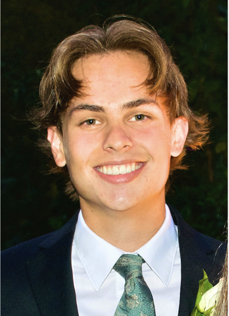

Hello Hack4Impact!

Hey all, my name is Carson Gabler.
I am a second year Computer Science major from Portland Oregon.
Thankfully, I was able to have free time while working this summer. Here are some of the things I did:
I love soccer. I have played it my whole life
I was also able to work out with all my friends.
I went to visit my glorious kings at Oregon State. GO BEAVS
I attended a couple concerts and music festivals.
Finally, I was able to intern with my local high school and my favorite teacher. Focusing in software development, artificial intelligence, and teaching!